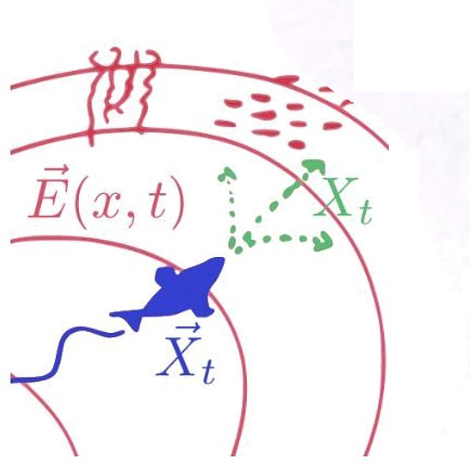

Techniques and Concepts in Movement Ecology
With applications in R

Preface
This is a living (and collaborative) document which primarily serves as course materials for EFB 796: Techniques and Concepts in Spatial and Movement Ecology - a graduate-level course I am currently (Spring 2023) teaching in the Dep’t of Environmental Biology at SUNY-ESF, together with some able assistance and collaboration. But it is also being developed - perhaps presumptuously - as the beginnings of a book. It is, of course, far more typical for people who embark on putting together a “book” to first teach a course for several years (or decades!) before making the leap into a text. But the smoothness of generating these materials in an organized way makes the line between course materials and a book somewhat blurred1.
1 Big shout out to the team behind Quarto, and - in particular - for the template we baldly borrowed in R for Data Science (2e), for blurring these lines in the best possible way.
Lectures will gradually be modified into something resemble “chapters”, the structure might change, more materials might flow in or out, references will be added, some proof-reading might occur, and there may be some more ephemeral course specific materials popping up here and there. It will (at least throughout the duration of the semester) be a chaotic and dynamic place. There will be incomplete sentences and incomplete thoughts and tremendous gaps. But the goal of this effort is, really, to put together the modern digital equivalent of a book that serves as a single, organized source for mathematical, statistical and computational techniques, complete with examples, for the modeling and analysis of movement (and some other kinds of spatial) data.
Note: This is an open project! Any suggestions, corrections, additions, materials, feedback, please do email me.
The authors: E. Gurarie, N. Barbour, O. Couriot, others.